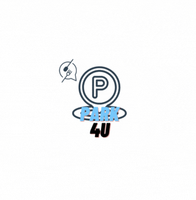
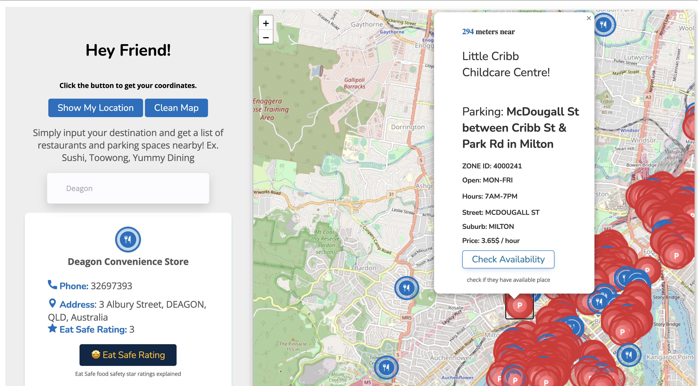
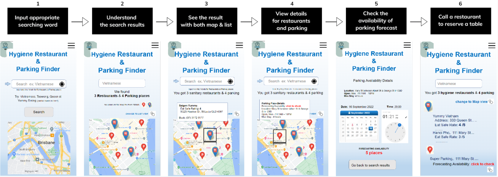
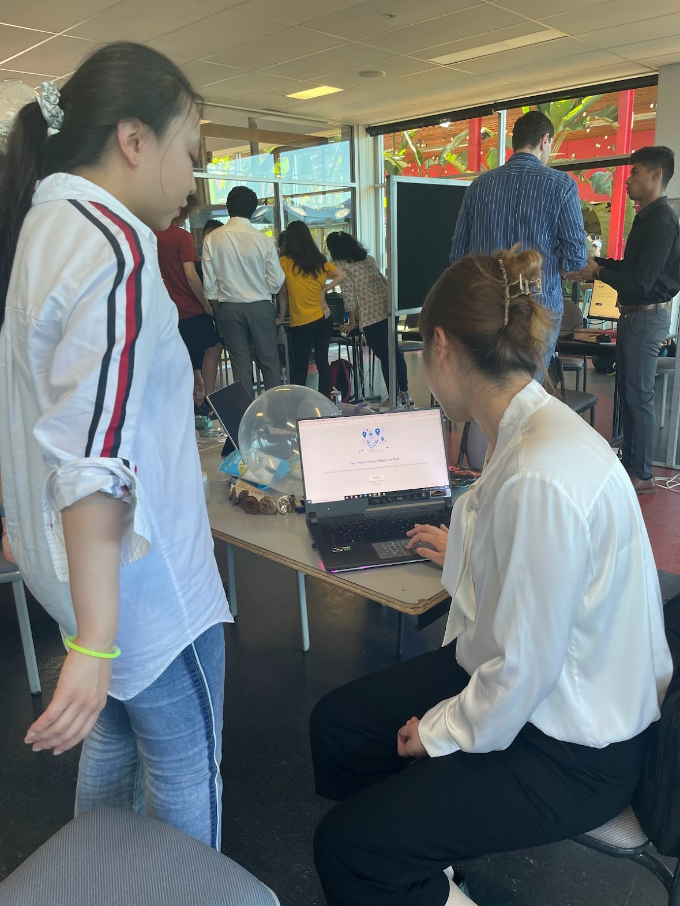
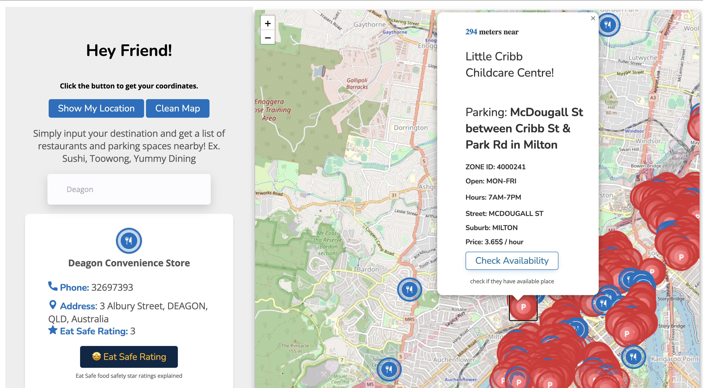
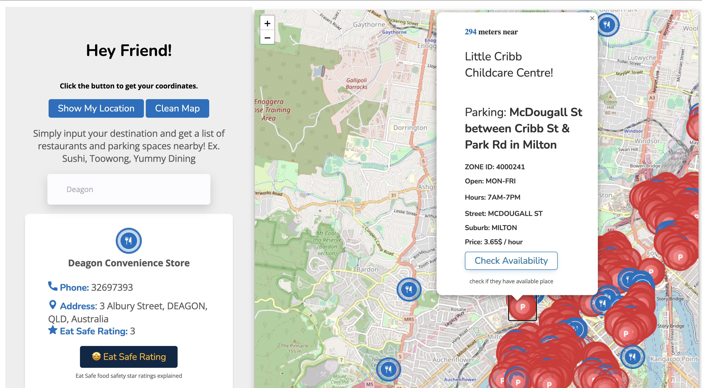

Hi, I am Ruobing Wang, well my friends usually call me Carrie.
I was stayed in Sydney for my bachelor's degree, and now I am so excited to move
to
Brisbane to continue my Master's degree in Interaction Design at the University
of Queensland.
I'm a student curious about all novelty things,
especially business data analytics and web/app design.
I love listening to music and painting stick figures in my free time.
My volunteer experience has given me a deeper understanding of teamwork;
this is my first time learning website design.
Feb 2022 - Jun 2022
Unit Representative of a Finance unit
Feb 2021 - Jul 2021
Digital Marketing Analyst in AIESEC
Feb 2020 - Jun 2022
Global Leadership Program Undeergraduate with Merit
UI/UX
Designing Web/App interfaces
HTML
86%
CSS
75%
JavaScript
68%
Tabeau
Data Analyst
Python/Java Programming
Programming
R-lanuage/SQL/SPSS/Access
Data Mining
Jul 2022 - present
Master of Interaction Design from The University of Queensland
Jul 2019 - Jun 2022
Bachelor of Business Analytics from Macquarie University
function contactMe() {
var email;
if (confirm("Contact me ")) {
email = "helencarrie1109@gmail.com";
}
myheart.getElementById("address").innerConnect = email;
}
Part A
Our Project

Our concept is designed to help young families who live in suburbs easily
find a good
restaurant, make an informed dining choice and park family car stress free.
Provide safe dining experience for families with children while offering stress free parking in
the Great Brisbane area. We worked as a team to contribute for this project .Our project name is
Park4U,
which means we aim to help people to find parking spaces and at the same time they could enjoy
their meal.
The 4 has similar pronunciation of Food.
Logo:
I was in charge of the design of our project logo. Our project's main idea is to
help people find the right parking places and restaurants.
I use the parking sign icon to present parking and cutlery to implied restaurants.
I choose blue, grey and black as the keynote for our project layout.
Dataset usage:
We use
Eat Safe Brisbane dataset to help families make informed food and dining
choices about a particular restaurant they are interested in going to.
In addition, to ensure a simplified parking experience and a stress-free journey to
the
restaurant we use occupancy forecastingand parking meter locations datasets to display parking places on the map.
Purpose of the application:
Provide safe dining experience for families with children while offering stress free
parking in the city center
Target audience:
People who live in Brisane city want to find parking spaces and dining out with friends and/or
families.
Car Parking Finding Process
When user enter one of the keywords of "restaurant name" in the search bar to search
for
nearby parking area and along with information ,
then the main interface of our map will recommend parking lots around user's choice
and
restaurant 's food safety "Rating List with top scores to lower Scores ."
User also could check the nearest parking places avaibale with the distance meters
shows
.
After the user click "check avaliability" that will show the waiting time for the
current parking places if occupancied now.
With the booking function user can note the data and stay time duration to
focasting the selected parking palce , which images show in "Main Feature".

Inital Idea Development
Before starting this unit,
I was always interested in dealing with the parking problem in the city area because sometimes
I found it very difficult to find an appreciated parking place near a restaurant.
In the context of this,
I decide to use Brisbane parking meters and
forecasting datasets to make forecasting
for parking spaces and also use safety food permits to make sure customers will be able to parking
and enjoy their meals.
Rapid Design Sprint:
We grouped randomly, lucky we all interested Inner City Transport.
Then, my rapid design topic was similar to our team's thinking.
We agreed on how three datasets would join in the following weeks,
at the beginning of the design phases. We discussed multiple times in user-centred
design parts.
There is something like how we help display the map and restaurant and what we can do to
make our app more attractive.
The rapid design sprint is more like a group of people brainstorming ideas, whereas the
more extended design computing project is more about group collaboration.
Refelction:
In the future, there are so many things I would change different from this time.
At the beginning of this project,
I was thinking of making a unique and fun application that could help people find parking lots
easily in Great Brisbane.
However, there are a few technical limitations for me. Firstly, as a first-year student,
I have to do more research to familiarise myself with the contents of this unit, and at the same
time,
I have to balance my other assessments with this one, which took me lots of time to do so.
If there is any chance that I can change this situation,
I would like to learn more knowledge on how to get APIs and js before starting this project.
My Contribution:
I searched vital datasets for what we could use and figured out how to connect them to
make more
sense for our project.
I created a Figma
to make a user test with my friends and got some feedback on how normal users
reacted to this
project.
Since then, I have been the principal charge of the design layout of our project.
Meanwhile,
regarding my personality, ESTJ-A.
I always work hard to bring my group members together,
assist our leader and try my best to help them whenever they need it.
Since we decided to keep the game function which aim is to relax users if they have to
wait too long before parking.
Then I researched three articles: "Optimisation design and evaluation of parking route
based on automatic assignment mechanism of parking lot",
"Research on smart parking guidance and parking recommendation algorithm",
and "An IoT-based parking recommendation system considering distance and parking lot
flow. "
Insights from three articles on adding a Game feature to the web application of our
group project.
A growing number of vehicles on the road has resulted in a general lack of parking
availability, which causes additional stress to drivers and increases the risk of road
accidents (Hilal, et., 2022). One of the successful functions added to the car parking
web is a game used to model driver behaviour in indoor facilities with parking fees.
Then The game of life is adjusted to the proposed model by filling, swapping, and
emptying cells. Occupied cells with seven or more neighbours are released, and empty
cells remain empty. Furthermore, the process of finding available parking increases
carbon dioxide emissions. This work explained that a mobile application that uses games
to find parking places is easy to find public indoor parking spaces. The mobile
application helps the final user to find the recommended parking space quickly. The
proposed system achieves substantial improvements for intelligent parking in indoor
installations in terms of reducing the time and traversing distance to find an available
parking space and can be enhanced with a tool to forecast future demand for parking
spaces.
Arriving customers maximise their utility by joining the queue, where the utility is a
function of the reward for parking and the cost of circling and paying for parking
(Ratliff et,.at, 2016). Moreover, it demenstres that social welfare is higher than in
standard applications and occupancy and average waiting time are always less than
without game addition in innovative car parking applications.
On the other hand, games will offer interactivity, entertainment and fun aspects to the
concept, as a report by Zhang, X., Li, P., and Li, D. (2014) where we discovered that
cooperative gaming helps to achieve win-win situations.
Ratliff, L. J., Dowling, C., Mazumdar, E., & Zhang, B. (2016). To observe or not to
observe: Queuing game framework for urban parking. 2016 IEEE 55th Conference on
Decision
and Control (CDC).
https://doi.org/10.1109/cdc.2016.7799079
Li, P., Li, D., & Zhang, X. (2013). CGPS: A Collaborative Game in Parking-Lot Search.
Proceedings of International Conference on Soft Computing Techniques and Engineering
Application, 105–113. https://doi.org/10.1007/978-81-322-1695-7_13
Hilal, H. A., Hilal, N. A., Hilal, A. A., & Hilal, T. A. (2022). Crowdsensing
Application on Coalition Game Using GPS and IoT Parking in Smart Cities. Procedia
Computer Science, 201, 535–542. https://doi.org/10.1016/j.procs.2022.03.069
To improve user experience and parking spaces forecasting accuracy rate, regarding the
above articles mentioned,
our project includes a forecasting parking lot and parking times control bars.I also
researched on three articles on how to dedign features on parking intelligent
applications fo rour project.
As Fang et .at ( 2017) state, the parking guidance system can improve traffic, ease
congestion, increase safety, improve the driver's experience, and reduce vehicle
emissions. Meanwhile, the parking guidance system can improve traffic, ease congestion,
increase safety, improve the driver's experience, and reduce vehicle emissions.
According to the research from Tsai in 2021, drivers slow down and look for available
space when searching for a parking space, but if they cannot find one, they circle,
which causes traffic congestion and increases the risk of accidents. Fang's formula of
the travel distance between a parking lot and a destination is given by the following
terms: reservation credibility, occupancy rate, straight distance, per kilometre of
resources consumed, and parking time, which improves the parking space utilisation of
the parking lot.
The layout of AP devices in the parking lot is based on WiFi location technology. WiFi
positioning technology can also be used for indoor positioning to predict the parking
lot more. A questionnaire about the individual demand of parking users was conducted,
and an optimal parking lot assignment model was established(Han et., at, 2017).
Han, Y., Shan, J., Wang, M., & Yang, G. (2017). Optimization design and
evaluation of parking route based on automatic assignment mechanism of parking
lot.Advances in Mechanical Engineering, 9(7), 168781401771241. https://doi.org/10.1177/1687814017712416
Fang, J., Ma, A., Fan, H., Cai, M., & Song, S. (2017, November 1).
Research on smart parking guidance and parking recommendation algorithm. IEEE
Xplore.
https://doi.org/10.1109/ICSESS.2017.8342898
Tsai, T.-C., & Chen, Y. (2021, October 1).
An IoT-based parking recommendation system considering distance and parking lot
flow. IEEE Xplore.
https://doi.org/10.1109/ICTC52510.2021.9620850
Figma:
Our Poster
In week13, I created the digital poster for our pitch section during the tradeshow.
As we have a paper poster that contains more details of our project, I keep it simple and
more active using " Canva".
To suit our project more, I used the same font, icons and colours as ours.
Furthermore, our project concept is a mobile-friendly application,
and I used the iPhone model as the key display. All images inside the phone are from our
actual project.
The prototype is an excellent way to make our ideas tangible and perceptible.
This design phase displays our prototypes, feedback from the test and reflection.
My Contribution:
In this test, I was the charge of observations ( taking note of participants'
emotional responses, body languages and recording the whole test session)
Test Purpose:
During this section, we aim to figure out our primary object and explain the
methodologies we used.We used Powerpoint slides as our test tool compared to paper,
and PowerPoint is more straightforward for users.
Feedbacks:
we got the most positive feedback. While there was a suggestion on decreasing the
issue of "too much content" on one window . Thus, we planned to regard "the
atmosphere and layout design play an essential role in raising consumer pleasure
and
arousal" to keep everything effeienct.To make consumers recognize the value
and
drive positive "attributes" from the app, we deploy additional usability tests to
offer stress-free and positive experiences.
Reflection:
After the user test, we understood how actual user responses on our project so far.
Regarding the feedback we received, our primary focus is to provide safe dining.
A free parking experience is essential to families living with children in the city
suburbs.
Test Slides:

Wu, W.-Y., Lee, C.-L., Fu, C.-S., & Wang, H.-C. (2013).
How can online store layout design and atmosphere influence consumer shopping
intention on a website? International Journal of Retail & Distribution
Management,
42(1), 4–24. https://doi.org/10.1108/IJRDM-01-2013-0035
My Refelction:
After the prototype section, I learnt the higher the resolution of a prototype could contribute,
the less Feedback. Therefore, in my future prototype, I will keep the more explicit materials
possible.
As some of the Feedback states, we show so many functions, in the beginning, it makes users
feel"dizzy".I will note them down to remind me to implement no more than one or two functions each
time as a low-resolution prototype in case of cause overload.As Lerwick et al. discussed, we should
inform the users, not explain a prototype; it is a task for us to generate brief goals we expect to
achieve. The best material to use is to get from the prototype.
Lewrick, M., Link, P., & Leifer, L. (2020). Design Thinking Toolbox : A Guide to Mastering the
Most
Popular and Valuable Innovation Methods. Wiley & Sons Canada, Limited, John.
Part C
Final Dilivery
This section shows our final delivery with Communication of Final Product, Communication of
Final Product, my contribution, and my reflection.
Change to Concept:
· Change the previous concept (Middle-class young families with 1-2 kids who
actively use a car at least one time per week in a restaurant ) to "People who live
in the great Brisbane area intend to find parking spaces and dine out with friends
and/or families"
· Changing the following concept is our purpose of implementing our application to
search the restaurant's list sorted by Food Safety Score from top to bottom.
· Add user current location on the search funtion page
· Change game from sudoku to Car game which is more suit to our project
· Insight ideas to prototypes or interviews with users instead of rely on group
members brainstorming
Referring to the previous critiques, we got the original concept not considering
that enough to demonstrate the relationship between parking finding and dining in
the restaurant.
Sorting the restaurant in descending safety food scores would enhance user
experience on the recommended dining out places and parking spots finding.
Trade show result :
Overall, we received the most positive Feedback from the external committee and students
during the trade show. Meanwhile, we constantly invited other students to engage with
our concept and collected valuable Feedback from different sources.
Our team designed a concept that ensures stress-free parking and a safe dining
experience for families living in the suburbs.
More improve :
In group cooperation in the presentation, we should assign a few members to public
speaking to better understand the audience and clearly outline the structure of our
schedule at the beginning of the exhibition.Moreover, we should consider adding more
interactive activities to our project in the user interface section, such as a colourful
layout.Deeply miniing the Safety food dataset to provide more useful information to
users.Make several improvements to the final product, including conducting additional
user testing sessions with expert users, adding main navigation, and designing other
pages such as contact, about us, how-to-use pages, etc.Moreover,If we have more time, I
think we could redesign the "check availability" pages, introduce a tutorial, fix API
content returning "null", which is help to improve search results, and filter incoming
data with only
keep relevant content.
Trade show user test

Reflection:
In the final delivery , I do believe we have successfully developed a solution that
helps families make hygienic Food and dining choices and offers a simplified parking
experience. Reasons showing below:
1. The project was quite successful because of our strong cooperation and
collaboration,
constant discussions, weekly group meetings and brainstorming sessions, and the
ability to develop solutions as a team.
2. The outcome is a fully functional prototype that meets most of the user needs to
be covered in this research. However, the concept could have been more engaging and
exciting.
quite
3. We want to improve the final product by conducting additional testing sessions
with expert users. For instance, add main navigation and design other pages such as
contact, about us, how-to-use pages, etc.
Course Reflection:
This course helped me to develop my problem-solving skills, one of the first
problems I encountered was how to show the calendar on the page and let the user
pick a date. It takes me a long time to search for some resources on HTML, CSS and
js. Firstly, I found an online source, but we had to pay; then, I tried another
research and finally found another option that did not require payment. Secondly,
after the first presentation, some of the audience tell us we should add more photos
of the restaurant. Yelp may be a good option. However, it requires us to send emails
and pay for the resource content. Because of that, we decided not to use restaurant
photos; instead, we chose to provide some phone numbers.
During these twelve weeks of study, I understood a bit about the design industry. In
the previous, I thought that design was art or a sign, not a relastic; however,
after study in this subject, I understand a good designer should understand the real
issue at the first stage so that that designer can make innovations in future. On
the other hand, I also learned how essential users' experiences are, as we did many
user tests, and the users are always the main targets. Thus, in my future design
journey, I will focus more on the potential customers, observing their activities
and attempting to comprehend their queries, motivations and interests.Meanwhile, I
realised we did not prepare very well for the user prototype from the previous user
test feedback. Hence, in the future innovation project, I will improve the future
user prototype processes according to the input.
Last but not least is time management; I feel a little bit rushed during this
period. In the future, I will create my to-do list and balance my other subjects.
Portfolio
Structure
Due to this is the first time designing my web portfolio, I searched lots of other
designers' work, and the beginning of this web animation style I was inspired in Youtube
channel on Text Tying Animation on website Using
HTML, CSS
and Js .
 
